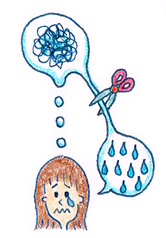

９ : 感情を直接変えることはできない
・感情を直接変えることはできない

前回は認知行動療法の基本である、「認知」と「感情」についてお伝えしました。まず最初のステップとしては、自分の中で 「認知」と「感情」を分けてみることです。
なぜ分けることが大事なのかと言うと、「認知」は変えることができるが、「感情」は変えることは難しいからです。
例えば会議の席でとても緊張している人がいたとします。 緊張はいやなものですので、「緊張しないようにしよう！」と 思ってもうまくいかないですよね。
緊張しないようにしようと思えば、緊張しなくなるなら誰も悩まないはずです。 感情を直接操作することは難しいのです。
・混乱したら認知を改善する
しかし、認知（考え方）はわりと変えやすいです。
「緊張しながらお話してみよう」
「緊張は自然なことだから、多少硬くなっても伝えることはしっかり伝えよう」
と自分の中で考え直すことができます。
そして大事な点が、考え直すことによって、感情が幾分緩やかになるということが心理学の研究でわかってきていることです。
すなわち認知と感情をわけられるようになると、認知を健康的にすることで、感情のあり方も健康的にすることができるのです。
それでは1つ練習問題を解いてみましょう！！
〔練習問題〕
「高校時代に仲のよかった友人に食事の誘いのメールを送った。だけど3日間返信がこない。」
このような状況で、
「認知」と「感情」をわけてみましょう。
思考：自分は嫌われているから返信がこない
感情：悲しい、寂しい、情けない
上記の例を参考にして みなさんも、実際に考えてみましょう！
思考：
感情：
いかがでしたでしょうか？
このように1つの出来事に対して自分がどのように考え（思考）、自分はどのように感じているか（感情）をわけて考えることは大切です。
まずは、認知行動療療法の最初のステップとして、認知と感情をわけるということを覚えておいてください。
 |
|